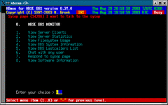
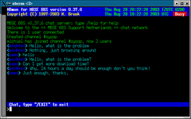

Last update 28-Aug-2003
mbmon - MBSE BBS Monitor
Sysnopsis.
mbmon
Description.
mbmon is the monitor program so that you can see what is
happening on your bbs. It can show all processes and actions of all programs,
show system statitistics, disk useage, and the last callers list.
mbmon must run on the same system where the bbs is. When
started it will also report that the sysop is present on the system for chat so
that users of your bbs can page you for a chat. If a user pages you, this will
be shown in every screen of mbmon and a beep will sound every
few seconds.
|
 Main menu, a user is paging.
|
 Chat with a user.
|
Environment.
In order to run mbmon you must set the global variable $MBSE_ROOT. This variable must point to the root directory of the bbs structure.
Menu 1.
This screen shows the running bbs programs and what they are doing.
Menu 2.
This screen displays the actual mbtask server status and some internal variables. The left side of the screen are more statistics and counters, the right side displays the actual bbs open status, Zone Mail Hour status, if Internet is alive, if internet is needed, if mbtask is internal running and the system load average. Consult this screen if you think mbse doesn't run.
Menu 3.
This screen displays the filesystem usage. Removeable filesystems such as CD's are not displayed, only filesystems that the bbs could use.
Menu 4.
This screen shows some bbs information.
Menu 5.
This menus shows the lastcallers of the bbs. It shows the username, location, userlevel, the device they logged in from, the starttime, the duration, the number of calls, the linespeed and the actions they have done. The action fields mean: Hidden, Download, Upload, Read messages, Post messages, Chat, Offline reader, External door.
Menu 6.
Chat with any user. Using this menu you enter the chatserver and you can chat in any channel just as the users of your bbs can do. The chatserver works just like an IRC server. Type /HELP for help.
Menu 7.
Respond to a sysop page. This is actually the same as chat with any user, the only difference is that you will join channel #sysop immediatly. If the user is not yet connected after his page, he will also be connected to the channel as soon as possible.
Menu 8.
This shows the software information.
 Back to index
Back to index{kind=link}
{kind=link}